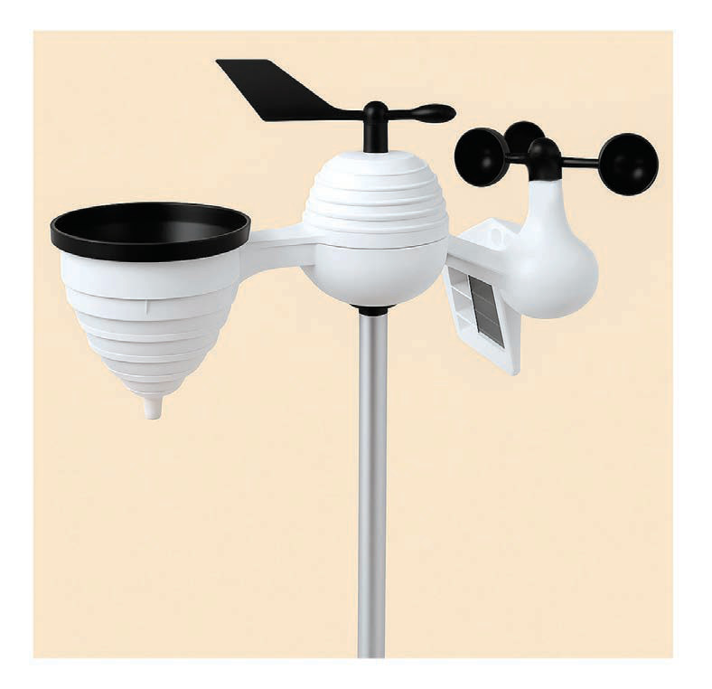

Baadhi ya vituo vya hali ya hewa nchini Tanzania vinatumia vifaa vya kianalojia (tekinolojia ya zamani) katika kupima vipengele vya hali ya hewa. Hata hivyo, kulingana na maendeleo ya sayansi na teknolojia vituo vingi vimefanya maboresho kutoka kuwa vituo vya kianalojia na kuwa vituo vya kiotomatiki vya hali ya hewa vinavyotumia vifaa vya kisasa kurekodi na kutunza taarifa za hali ya hewa.
Kupima na kurekodi hali ya hewa ni muhimu sana kwa sababu husaidia kufahamu hali ya hewa ya siku au kipindi husika. Hii humwezesha binadamu kupanga vyema shughuli za siku au kipindi mahususi na kuchukua tahadhari za kimazingira. Aidha, upimaji wa hali ya hewa kwa kipindi cha muda mrefu husaidia kujua tabianchi ya maeneo mbalimbali.